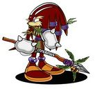
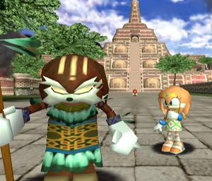
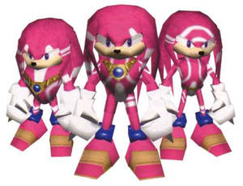
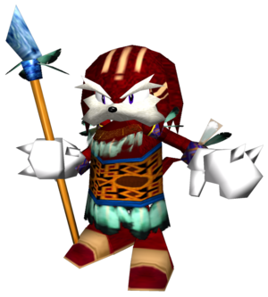
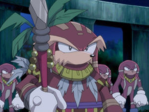
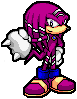
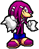
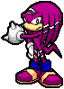
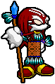

Pachacamac The Echidna
 De: La Frikipedia, la enciclopedia extremadamente seria.
De: La Frikipedia, la enciclopedia extremadamente seria.
| De la serie gobernantes de ayer y de hoy:
|
| Pachacamac The Echidna
|
| 
|
| Pachacamac en sus años mozos (antes de engordar)
|
|
| Nacimiento
|
4000 A.K (Antes de Knuckles)
|
| Muerte
|
3000 A.K (Antes de Knuckles) ¡¿vivió mil años?!
|
| Cargo
|
Emperador, o como mierda se quiera llamar
|
| Ideología
|
imperialista codicioso y belicoso (o sea, como todos los gobernantes de cualquier potencia mundial ¬¬)
|
| Nacionalidad
|
Echidna
|
| Cónyuge
|
murió antes de que él emprendiera su campaña militar, así que nunca la conocimos.
|
| Dinastía
|
No tiene ningún parentezco con K'inich Janaab' Pakal
|
| Notas
|
Fue el único equidna con barba, y el único equidna hijoputa (aunque Ix también era un HDP)
|
Pachacamac fue el antiguo Mobius del cual proviene Sonic el erizo y su banda de amigotes peludos y pulgosos. Pachacamac The Echidna unificó con puño de hierro a toda la Civilización Echidna contradiciendo los consejos pacifistas de su propia hija Tikal, pero como ser Rey de Reyes no le era suficiente, se dedicó al antiguo arte de dominar el mundo y por eso hace 3000 o 4000 años (las distintas versiones nunca se ponen de acuerdo ¬¬), Pachacamac orquestó el ataque al Santuario Esmeralda que enfureció a Chaos, el Dios de la Destrucción, que asesinó a todos los equidnas en la masacre que llevó a su civilización Maya a la extinción.
Historia
Como ya está muerto desde hace mucho tiempo, Pachacamac sólo ha sido visto en los flashbacks de los videojuegos de SEGA, principalmente en Sonic Adventure gracias a los poderes alucinógenos de María Tikal en su forma incorpórea como una bola brillante de luz, donde vemos que su padre Pachacamac era un hijo de puta el equidna de edad avanzada mas cabrón de su civilización, y se muestra con un hocico peludo (a diferencia de otros equidnas, posiblemente debido a que los demás se afeitaban porque eran metrosexuales).
Auge y Caída de su Reinado
La información sobre el liderazgo de Pachacamac en el Knuckles Klan proviene principalmente de la historia de Tails en Sonic Adventure, cuando Tikal hace que el zorro "viaje en el tiempo" a la ciudad de las Ruinas Místicas tal como estaba hace 4.000 años (pa' que veas que sí se pegó un "viaje" tremendo). Segun lo descrito por los lugareños (que eran todos equidnas guerreros anabolizados):

|
La hija del jefe amaba mucho a su abuela. El país fue mucho más pequeño cuando la abuela estaba viva. Pero el jefe quería expandir su reino. Después de la muerte de la abuela, él hizo su movimiento... y lo hizo bien. Él rápidamente se apoderó de todas las áreas circundantes. Pero a su hija no le gustaba lo que él había hecho...
|

|
| Un echidna guerrero traicionando a Pachacamac
|
|
|
Nuestro jefe es Pachacamac. Él es valiente. Bravo. Audaz. Con él nunca podemos perder. Todo se lo debemos a Pachacamac.
|
|
| Un echidna guerrero fanático de Pachacamac
|
Como vemos al primer equidna seguro lo hicieron callar para que deje de hablar sobre el lado oscuro de Pachacamac, mientras que al otro por ser tan fanático y lameculo lacayo de Pachacamac lo ascendieron al rango de capitán del ejército franquista del Rey Pachacamac.
Habiendo heredado el liderazgo del Knuckles Clan después de la Pir'Oth Ix que también quería dominar el mundo y unificar la tierra bajo una misma ley para proclamar la "Cuarta Gran Civilización" (especie de Crónicas Sónicas de la Hermandad Oscura, los Nocturnus inventaron una raza aria de Gizoids, con los que pretendían enviar horda tras horda de éstos Gizoids para atacar a los del Clan Knuckles, y así el Emperador Ix tenía a sus Stormtroopers mientras Pachacamac tenía a sus soldados clon. Los ejércitos se enfrentaban en varias batallas pero el Jefe Pachacamac sabía que su tribu estaba tecnológicamente en desventaja en comparación a las armas mas avanzadas de los Nocturnus. Las guerras floridas de los aztecas de Pachacamac VS Pir'Oth Ix eran interminables y derramaban sangre inocente por todo el territorio de la ancestral Civilización Echidna, por lo que Tikal trató de convencer a su padre de no seguir con sus ambiciones beligerantes, pero finalmente fracasó, resultando que Pachacamac fijó sus ojos en el Santuario Esmeralda, considerando a las 7 Esmeraldas Caos como la clave para la supervivencia del Clan de los Nudillos con el fin de hacerse una paja con todas las victorias en las sucesivas batallas.
 Tikal tratando de convencer a Pachacamac para que no siga enviando Stormtroopers a las
Guerras Clon. El tiro le salió por la culata porque Pachacamac envió a sus
soldados clon contra Tikal y sus amados enanos los Chao ¬¬ .
cogieran cargaran a todos estos enanos, pero no logró evitarlo y los soldados clon de Pachacamac arremetieron contra los enanos Chao y contra Tikal, y se los llevaron por delante a todos y los violaron y los mataron y los violaron después de matarlos (mas o menos como le hicieron los Templarios durante las Cruzadas a todos los que no eran cristianos). Los implacables guerreros equidna del Klan Knuckles. Cuando hablabas con ellos parecían muy sabios pero después se tragaron las órdenes de Pachacamac sin cuestionar. Gran error; y así les fué... U_U
El sacrificio de los Chao enfureció a Chaos, el dios aienígena sordomudo que se encargaba de proteger a los Chao (se ve que los protegió muy bien ¬¬, ¡¡nomás mira las atrocidades que les hicieron!!), así que como éste bicho Chaos se encabronó acabó en tu cara descargando su furia contra todos los soldados echidnas, y para liquidarlos a todos absorbió las 7 Chaos Emeralds del Templo de la Master Emerald, y con la energía de las 7 bolas del dragón esmeraldas se transformó en Perfect Chaos y se los cepilló a todos. El clan Knuckles y toda la civilización Echidna fue destruida de un solo golpe; Pachacamac y sus guerreros muerieron a manos del Chaos Perfecto. Chaos trató de destruir el mundo con un gran Diluvio Universal pero Noé construyó el Arca y se salvó fue impedido de ahogar el mundo entero sólo por la intervención de la Master Emerald, que respondiendo a las súplicas de Tikal accionó sus místicos y sagrados poderes para evitar mas matanzas y así neutralizó a las 7 esmeraldas que abastecían a Chaos, y como a Chaos ya no le quedó mas droga para hacerse el malo entonces no le quedó mas remedio que encerrarse dentro de la Master Emerald con Tikal donde se mantuvieron chingando durante toda la eternidad para mantenerlo distraído y entretenido a Chaos y así posponer todo ese asunto del fin del mundo por unos cuantos milenios mas, hasta el 21 de Diciembre de 2012 como lo habían profetizado los antiguos Mayas antes de que Perfect Chaos destruyera su civilización.
Sucesores

Pachacamac hubiera tenido sucesores si no hubiera interrumpido a Knuckles & Tikal cuando estaban
procreando a su descendencia. Algunos creen que por ver a su hija haciéndolo fue que Pachacamac se encabronó y su furia lo llevó a declararle la guerra a todo el mundo.
Si pensaste que los del clan Nocturnus serían los sucesores de Pachacamac ahora que él y su tribu del clan Knuckles había sido borrada de la faz del paneta, pos no, te equivocas, a los Nocturnus tampoco les fue nada bien. Según las Crónicas de The Twilight Zone y la Zona Fantasma de la saga de Superman) donde los Nocturnus permanecieron prisioneros allí hasta que pasaron eones y SEGA decidió sacar un RPG de Sonic para el Nintendo DS y para eso trajeron de vuelta a éste universo a éstos pinches de los Nocturnus (a los que obviamente Sonic, Tails, Knuckles, Amy, Shadow, Rouge, Cream y los demás amigotes del erizo se encargaron de destrozarlos, como no podría ser de otra forma en estos juegos de trama tan predecible ¬¬).
Superpoderes
 Pachacamac solo abre los ojos para usar sus poderes de
hipnosis para controlar tu
mente, así que no lo mires fijamente a los
ojos (es mas poderoso que el
Hipnosapo)
Al igual que todos los hombres famosos de la antigüedad y gobernantes de ayer y de hoy, el Jefe Pachacamac estaba dotado con una amplia gama de telepatía, telekinesis, teletransportación, levitación, invisibilidad, lanzaba OTAN en la actualidad.... ¿por qué será?.
Trivia
 En
Sonic X los equidnas aparecen anabolizados con esteroides y Pachacamac tiene la barba y las cejas de otro color y los ojos abiertos. Otra diferencia es que Pachacamac también subió de peso, pero mas que anabólicos lo que ingirió fueron
tacos y por eso engordó casi tanto como el
Dr. Eggman.
 Guerrero Echidna amenazando con su puño
 Guerrero Echidna tratando de incrementar su
Ki  Guerrero Echidna haciéndose el maloso
 El Jefe Pachacamac cerrando los ojos para parecer bueno y sabio, cuando en realidad es un hijo de puta.
- Pachacamac es el nombre de una ciudad-templo del Imperio Inca, cuyas ruinas se encuentran en lo que actualmente es Perú.
- En la Mitología Inca, Pachacámac era un dios creador cuyo nombre significa "Hacedor de Tierra" y/o "Soberano del Mundo", vinculado a Viracocha y originalmente adorado por los Yungas pero luego adoptado por el Imperio Inca. Él era un hijo de Inti y Mama Quilla, y el marido de la Pachamama. El Dios Pachacamac creó al hombre y a la mujer, pero se olvidó de darles comida y el hombre murió de hambre, o sea que hasta en la mitolorgía el tal Pachacamac era un hijo de puta, y será por eso que los de Sega le pusieron éste nombre al personaje.
- En la mayoría de las escenas
eróticas en Sonic Adventure, Pachacamac siempre aparece con los ojos cerrados (para ocultar que sufre de estrabismo), pero en el anime kemono Sonic X aparece siempre con los ojos abiertos, lo que demuestra que en Sonic X se han cagado en los guiones originales de los juegos hasta en el mas mínimo detalle.
- Debido a que Pachacamac solo vivió en el pasado y ya está flashbacks de Sonic Chronicles: The Dark Brotherhood donde es mencionado unas cuantas veces por Knuckles y finalmente reaparece en un flashback breve justo antes del Beetlejuice, repites su nombre y se te aparece).
- Pachacamac vuelve a tener una muy breve referencia en Valet Parking.
- En Sonic Chronicles, Shade The Echidna se refirió una vez a Knuckles como "descendiente de Pachacamac", por lo que algunos gamers creyeron que Pachacamac y Tikal son ancestros de la familia de Knuckles, aunque si Pachacamac murió y Tikal quedó encerrada dentro de la Master Emerald entonces su linaje se perdió y por lo tanto Knuckles no desciende del árbol genealógico de Pachacamac, así que lo que Shade habrá querido decir es que Knux es descendiente cultural de Pachacamac por ser el último sobreviviente de la Civilización Echidna, pero no es que Pachacamac sea ancestro consanguíneo de Knuckles (a menos que Pachacamac se haya tirado a la tatara-tatara-tatara-tatara-tatara-tatara-tatara-tatara-tatara-tatara-tatara-tatara-tatara-tatara-tatara-tatara-abuela de Knuckles durante una relación extramatrimonial tan pecaminosa que se mantuvo en secreto durante siglos!!!).
- Según los nerds, gamers, gamer girls, otakus, y demás frikis sin vida social, así como los Echidnas sobrevivientes erigieron Angel Island, los Nocturnus sobrevivientes que no fueron aprisionados en la Jaula
de las Locas del Crepúsculo también hicieron lo suyo... de hecho, uno de los soldados de Pachacamac sobrevivió y usurpó el trono, se apoderó de la tecnología de los Nocturnus y fue el primer miembro fundador de la Dark Legion, reencarnando eones mas tarde en Lord Enerjak, archienemigo de Knuckles, lo que refleja que la Dark Legion es la secta sith heredera de la síntesis entre lo que quedó del Knuckles Clan y lo que quedó del Nocturnus Clan (por eso el Imperator Ix es tan sospechosamente parecido al Doctor Finitevus, y por eso tanto la Dark Legion como la Dark Brotherhood son sectas masónicas de tecnócratas megalomaníacos con armaduras y tecnología militar de última generación.
- La épica lucha entre la tribu del Knuckles Clan y los tecnócratas del Nocturnus Clan está claramente inspirada en la lucha épica entre los Saiyajin y los Tsufurujin del archiconocido Sonic Team que siempre andan homenajenado a Dragon Ball y a muchas otras sagas exitosas de las que "toman prestado" el argumento.
- Los que actualmente reivindican el modus operandi imperialista y belicoso de Pachacamac (tercerposicionistas, rexistas, y nazionalcapitalistas) argumentan que en realidad Pachacamac era un buen rey pacífico hasta que su esposa murió y eso lo traumó bastante; mientras que por otro lado los que actualmente se oponen al modus operandi imperialista y belicoso de Pachacamac (hippies, rastas, pacifistas, anarquistas, socialistas, comunistas, y marxistas-leninistas) argumentan que en realidad Pachacamac mandó a matar a su mujer contratando secretamente a un asesino del Clan Nocturnus para así tener la excusa para iniciar la Guerra Florida contra los Nocturnus y por extensión contra todos los clanes y pueblos vecinos con el fin de emplear la guerra como estrategia política para dominar el mundo (al igual que Hitler, Bush, Mussolini, Bush, Franco, Bush, Nixon, Bush, Reagan, Bush, etc.)
Enlaces belicosos
|
|
 Shooter Shooter
 Terror Terror
 Velocidad Velocidad
 Rol Rol
 Estrategia Estrategia
 Aventuras Aventuras
 Fight! Fight!
 Clásicos Clásicos
 Deportivos Deportivos
 Aventura gráfica Aventura gráfica
 Novela visual Novela visual
 Personajes de videojuegos Personajes de videojuegos
|
Frikipedia 2005-2016, Licencia
GFDL 1.2 - Extraído por FrikiLeaks

{kind=link}
{kind=link}